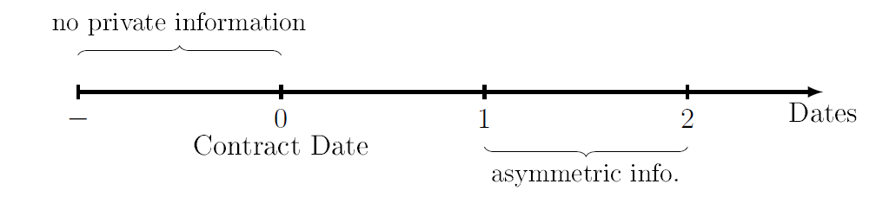
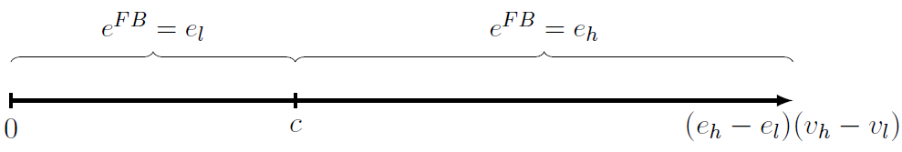
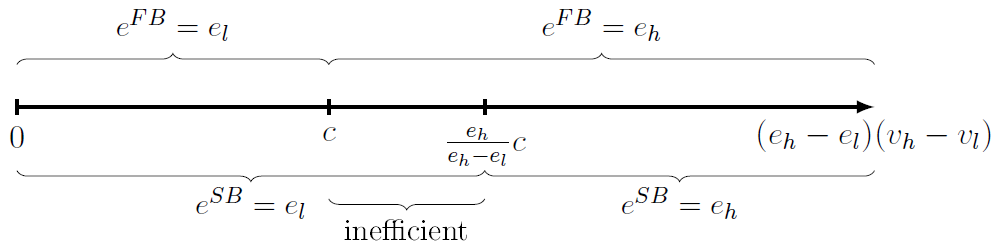
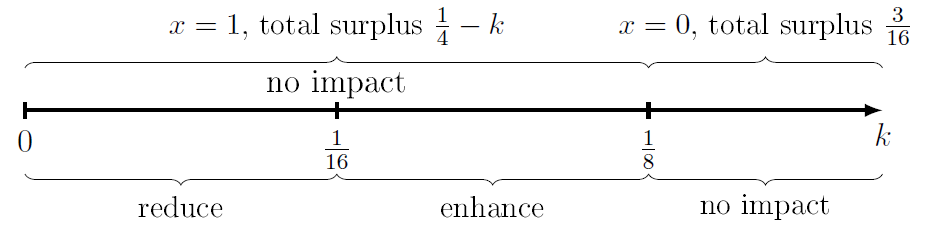

Moral Hazard

In moral hazard problems, the parties are symmetrically informed when the contract is written. Private information comes into place only after the contractual behaviour. An illustration of moral hazard is the following graph:

Two types of situation are considered: Hidden Action and Hidden Information.
Hidden Action
Assume two risk-neutral parties: Principal and agent.
The timing of the model is the following:
Date 1: Principal offers a contract, specifying transfer \(t\).
Date 2: Agent accepts or rejects.
Date 3: Agent chooses an effort level \(e\). \(e\) cannot be observed by the principal.
Date 4: Principal's verifiable return \(v\) is realised.
Date 5: Principal makes transfer \(t\) to the agent.
If the agent rejects, he gets a payoff of \(0\). \(v\) is a random variable before it is realised. The distribution of \(v\) depends on \(e\), with cumulative distribution function \(F(\hat{v}|e)=Pr\{v\leq \hat{v}|e\}\). This indicates that the realisation of \(v\) is affected by the effort \(e\). We divided the topic into two cases according to the agent's financial condition: with and without limited liability.
If both parties participate in the contract, they get the following payoff: $$v-t \text{ for the principal}$$ $$t-c(e) \text{ for the agent}$$
Without Limited Liability
Without limited liability means that the agent is sufficiently rich to pay a net cost. Following the 'recipe', we look at the no asymmetric information case as a bench mark first.
First Best
As a welfare maximising social planner, the first best effort is: $$e^{FB}=\arg\max_e \{\mathbb{E}[v|e]-t+t-c(e)\} =\arg\max_e \{\mathbb{E}[v|e]-c(e)\}$$
Depending on the discrete or continuous property of \(v\), this can be solved. Note that the payment \(t\) is just a transfer between two parties, and it will not generate surplus or deficit.
Now consider the modelled situation where \(e\) is not observable. Then, we cannot enforce the first best effort level \(e^{FB}\) in the contract. So, we have to think of a way to incentivise the agent choosing \(e^{FB}\) voluntarily.
The first best solution can be achieved by the following contract:
Sell-the-shop (Franchising)
Essentially, this contract makes the agent a 'residual claimant': $$t(v)=v-a$$ where \(a\) is some constant to be determined.
Then, the agent's expected payoff from accepting the contract is: $$t(v)-c(e)=\mathbb{E}[v|e]-a-c(e)$$ Since \(a\) is only a constant, the agent will then choose \(e=e^{FB}\).
The principle anticipates this and determines \(a\), the important thing is to maximise her payoff as well as keeping the agent in the contract. So, principal sets: $$a=\mathbb{E}[v|e^{FB}]-c(e^{FB})$$ Agent gets \(0\) from the contract (indifferent from the outside option \(\Rightarrow\) still accepts the contract). Principal gets \(\mathbb{E}[v|e^{FB}]-c(e^{FB})\), which is the first best total surplus. All surplus goes to the principal.
This can be illustrated by a numerical example. Suppose we have two different effort levels (low and high): $$e_l=0.2 \text{ and } e_h=0.8$$ The cost is respectively: $$c(e_L)=0 \text{ and } c(e_h)=1$$ Two states of the world: $$v_l=1 \text{ and } v_h=4$$ The distribution is \(Pr\{v=v_h|e\}=e\). Solve for the first best solution gives: $$e^{FB}=\arg\max_e \mathbb{E}(v|e)-c(e)$$ $$\mathbb{E}(v|e_l)-c(e_l)=0.2\times 4+0.8\times1-0=1.6< 2.4=0.8\times4+0.2\times1-1=\mathbb{E}(v|e_h)-c(e_h)$$ $$\Rightarrow e^{FB}=e_h$$
Fixed wage level will not work in the asymmetric case. However, if we use the 'sell-the-shop' contract, we can get the efficient effort level: $$t(v)=v-a$$ The principal will choose: $$a=\mathbb{E}[v|e^{FB}]-c(e^{FB})=\mathbb{E}(v|e_h)-c(e_h)=2.4$$
Then, the agent will choose \(e_h\) instead of \(e_l\): $$\mathbb{E}(v|e_l)-c(e_l)-a=1.6-2.4=-0.8< 0=\mathbb{E}(v|e_h)-c(e_h)-a$$
From the example, we can also see situations when the contract does not work. Suppose that the agent chooses the first best effort level as we wish, then if \(v_h\) is realised, the agent gets: $$v_h-c(e_h)-a=4-1-2.4=0.6>0$$ If \(v_l\) is realised, the agent gets: $$v_l-c(e_l)-a=1-1-2.4=-2.4< 0$$
So, if agent is risk averse with concave utility function, he may not accept the contract unless the principal pays him a risk premium. This case will not be covered in the lecture. However, the other case will be covered: if the agent has zero wealth and cannot pay the \(-2.4\), this will not work either. This is called limited liability.
With Limited Liability
The assumption here is that the agent has no wealth. Further assume the unobservable effort level is binary: \(e\in\{e_l,e_h\}\) with \(0< e_l< e_h\leq 1\). The effort cost is \(c(e_l)=0\) and \(c(e_h)=c\) accordingly.
Principal's verifiable return is also binary: \(v\in\{v_l,v_h\}\) with technology \(Pr\{v=v_h|e\}=e\).
First Best
If the effort level is observable, then the first best effort has the following properties:
Look at the expected total surplus (reminder: \(t\) is only a transfer between principal and agent):
$$ev_h+(1-e)v_l-c(e)$$
So, \(e^{FB}=e_h\) whenever:
$$e_hv_h+(1-e_h)v_l-c\geq e_lv_h+(1-e_l)v_l \Leftrightarrow (e_h-e_l)(v_h-v_l)\geq c$$
and \(e^{FB}=e_l\) otherwise.
Draw this on a graph:

So, whether the planner would like to enforce \(e_h\) as the first best option depends on the cost of high effort.
Second Best
Back to the hidden action case, let the contract be \(t(v_i)=t_i\) where \(i\in\{l,h\}\). The idea is to fix all possible effort levels, solving for transfer, and then calculate the expected surplus. After that, compare to the benchmark.
Suppose the principal wants to implement \(e=e_h\), then the transfer \(t_i\) has to be profit maximising for the principal while satisfying constraints from the agent's side: $$\max_{t_l,t_h} \{e_h(v_h-t_h)+(1-e_h)(v_l-t_l)\}$$ subject to: $$e_ht_h+(1-e_h)t_l-c\geq e_lt_h+(1-e_l)t_l \tag{IC}$$ $$e_ht_h+(1-e_h)t_l-c\geq 0 \tag{PC}$$ $$t_h\geq 0 \text{ and } t_l\geq 0 \tag{LL}$$ where (IC), (PC) and (LL) denote incentive compatible constraint, participation constraint and limited liability assumption respectively.
Then, look at the constraints and we can immediately find (PC) is redundant. (IC) can be rewritten as: $$(e_h-e_l)(t_h-t_l)\geq c \tag{IC}$$
We can therefore conclude the optimal transfer is: $$t_l=0 \text{ and } t_h=\frac{c}{e_h-e_l}$$ why? If \(t_l>0\), we can then reduce \(t_l\) to make the objective function greater without violating the constraint. Then we can see (IC) must bind, otherwise we can reduce \(t_h\) to increase the principal's expected profit without violating the constraint. By this, plug in \(t_l=0\) and we can get \(t_h=\frac{c}{e_h-e_l}\).
Thus, the principal's expected profit is: $$e_hv_h+(1-e_h)v_l-\frac{e_h}{e_h-e_l}c$$ and the agent's rent (agent's payoff) is: $$e_ht_h+(1-e_h)t_l-c=e_h\frac{c}{e_h-e_l}-c=\frac{e_l}{e_h-e_l}c$$
Suppose the principal wants to implement \(e=e_l\). Then one can show that the optimal transfer schedule is: $$t_h=t_l=0$$ The principal can get: $$e_lv_h+(1-e_l)v_l$$ The agent gets \(0\).
So we can conclude the second best solution is:
Principal implements \(e=e_h\) if:
$$e_hv_h+(1-e_h)v_l-\frac{e_h}{e_h-e_l}c\geq e_lv_h+(1-e_l)v_l$$
$$\Leftrightarrow (e_h-e_l)(v_h-v_l)\geq \frac{e_h}{e_h-e_l}c$$
Since \(e_h>e_l>0\), \(\frac{e_h}{e_h-e_l}> 1\). So the second best solution is stricter than the first best if the principal wants to implement high effort, and it is inefficient when \(c< (e_h-e_l)(v_h-v_l)< \frac{e_h}{e_h-e_l}c\).
We can combine this with the graph above:

If the agent has all the bargaining power, then the first best solution will be attained by the contract: $$t_h=v_h \text{ and } t_l=v_l$$ where the principal can only get zero profit while the agent extract all of the total surplus.
Application: Workplace Surveillance
Use the same setting as the limited liability case, except of:
Now the principal can make a contractable decision about whether install workplace surveillance, denoted as:
$$x=\begin{cases}1, \text{ if installed} \\ 0, \text{ not installed} \end{cases}$$
if installed, the agent's effort can be monitored, but this will incur an extra cost of \(k>0\). If not installed, then it is just the normal hidden action case.
Agent chooses effort \(e\in[0,1]\). The cost of effort is \(c(e)=e^2\).
The principal's return \(v\in\{0,1\}\) is verifiable with technology \(Pr\{v=1|e\}=e\).
Then, the first best solution can be solved by FOC (since no hidden information, the surveillance is not needed): $$x^{FB}=0$$ $$e^{FB}=\arg\max\{e-e^2-0\}=\frac{1}{2}$$ Then the first best expected surplus is \(\frac{1}{4}\).
Now turn to the second best solution: with hidden action. Suppose the principal does not want to install surveillance: \(x=0\). Let \(t_0\equiv t(0)\) and \(t_1\equiv t(1)\) Assume the principal wants to implement some \(\hat{e}\in[0,1]\), then the principal solves: $$\max_{t_0,t_1} \{\hat{e}(1-t_1)+(1-\hat{e})(0-t_0)\}$$ subject to: $$\hat{e}=\arg\max_e \{et_1+(1-e)t_0-e^2\} \tag{IC}$$ $$\hat{e}t_1+(1-\hat{e})t_0-\hat{e}^2 \geq 0 \tag{PC}$$ $$t_1\geq 0 \text{ and } t_0\geq 0 \tag{LL}$$
Note that (PC) is redundant if (IC) holds. Take FOC for the rhs of (IC) and we can get: $$t_1-t_0-2e\equiv 0$$ Then (IC) implies: $$\hat{e}=\frac{t_1-t_0}{2}$$
Then we can conclude that \(t_0=0\), otherwise one can reduce \(t_0\) and \(t_1\) with the same amount to make the expected profit greater without violating the constraint. Thus, \(t_1=2\hat{e}\).
We now need to solve for \(\hat{e}\), such that the principal can maximise her profit: $$\max_{\hat{e}} \hat{e}(1-2\hat{e})$$ Take FOC: $$1-4\hat{e} \equiv 0 \Leftrightarrow \hat{e}=\frac{1}{4}$$
Then, the transfer is:
$$t_0=0 \text{ and } t_1=\frac{1}{2}$$
Expected payoffs are
For the principal: \(\hat{e}(1-t_1)=\frac{1}{8}\)
For the agent: \(\hat{e}t_1-\hat{e}^2=\frac{1}{16}\)
We compare this with the case where \(x=1\). If the surveillance is installed, then the principal can sign a 'Forcing contract' where the principal simply enforces the first best option \(e=e^{FB}=\frac{1}{2}\). She will have to pay \(c(e^{FB})=\frac{1}{4}\).
Expected payoffs are
For the principal: \(e-e^2-xk=\frac{1}{4}-k\) (expected total surplus)
For the agent: \(0\)
Therefore, the second best solution is: $$x=1 \Leftrightarrow \frac{1}{4}-k>\frac{1}{8} \Leftrightarrow k< \frac{1}{8}$$ Install the surveillance iff the cost for doing so is less than \(\frac{1}{8}\).
Now, consider an extension where a privacy protection law forbids surveillance. Then the expected total surplus under the law will be: $$\frac{1}{8}+\frac{1}{16}=\frac{3}{16}$$ If without the privacy protection law, the second best solution above applies. Notice that: $$\frac{1}{4}-k< \frac{3}{16} \Leftrightarrow k> \frac{1}{16}$$
We can put this on a similar graph:

The privacy protection law can enhance the welfare iff \(\frac{1}{16}< k< \frac{1}{8}\). It will have no impact on welfare level if \(k\geq\frac{1}{8}\) or \(k=\frac{1}{16}\). It can even reduce the welfare level if \(k< \frac{1}{16}\).
Hidden Information
This is a situation where the private information, not private action, comes in after the contract.
One-sided
Timing:
Date 1: Principal offers a contract.
Date 2: Agent accepts or rejects.
Date 3: Agent learns his type \(c\geq 0\). Type is unobservable. Only distribution \(F(c)\) is common knowledge.
Date 4: Agent chooses quantity \(x\geq 0\). Quantity is verifiable.
Date 5: Contractually specified payment \(t\) is made.
Principal's payoff: \(v(x)-t\)
Agent's payoff: \(t-cx\)
The goal is to incentivise the agent to choose the efficient \(x\). As always, we first look at the first best: public information benchmark.
First Best
$$x^{FB}(c)=\arg\max_{x} \{v(x)-cx\}$$
This first best quantity can be achieved again by 'sell-the-shop' (Franchising) contract: make the agent a 'residual claimant'. Set the transfer rule as: $$t(x)=v(x)-a$$ Thus, the agent's payoff is: $$v(x)-a-cx$$ since \(a\) is just a constant. Agent will choose \(x^{FB}\) to maximise his payoff.
Principal can extract the whole of total expected surplus by setting \(a=\mathbb{E}[v(x^{FB}(c))-cx^{FB}(c)]\). Agent then gets only \(0\).
Two-sided
Consider a bilateral trade model where both sides have private information. The principal is the buyer and the agent is the seller.
Timing:
Date 1: Principal offers a contract.
Date 2: Agent accepts or rejects. If rejects, he earns \(0\) payoff.
Date 3: Agent learns his type \(c\geq 0\), and principal learns her type \(v\geq 0\). Types are unobservable. Only distributions \(F(c)\) and \(G(v)\) are common knowledge.
Date 4: Contractually specified trade decision \(x\in\{0,1\}\) and payment \(t\) are made.
Principal's payoff: \(vx-t\)
Agent's payoff: \(t-cx\)
First Best
It is clear that the first best solution is: $$x^{FB}(c,v)=\begin{cases}1, \text{ if } v\geq c \\ 0, \text{ otherwise }\end{cases}$$
This first best solution can be achieved under the two-sided hidden information environment by the following contract:
At date 3.5 the principal publicly announces \(\hat{v}\).
Subsequently the agent chooses \(x\).
Then the principal makes the following payment to the agent:
$$t(\hat{v},x)=\hat{v}x-\mathbb{E}_c[(\hat{v}-c)x^{FB}(c,\hat{v})]$$
The claim is then: $$\hat{v}=v$$ $$x=x^{FB}(c,v)$$ is an equilibrium.
To see this, suppose the principal has announced \(\hat{v}\). Then agent chooses \(x\) to maximise his payoff: $$t(\hat{v},x)-cx=(\hat{v}-c)x-\mathbb{E}_c[(\hat{v}-c)x^{FB}(c,\hat{v})]$$ The last term is a constant, so the agent will choose \(x=x^{FB}(c,\hat{v})\)
On the other hand, the principal announces \(\hat{v}\) to maximise his expected payoff: $$\mathbb{E}_c[vx^{FB}(c,\hat{v})-t(\hat{v},x^{FB}(c, \hat{v}))]= \mathbb{E}_c[vx^{FB}(c,\hat{v})-\hat{v}x^{FB}(c,\hat{v})+\mathbb{E}_c[(\hat{v}-c)x^{FB}(c,\hat{v})]]$$ $$=\mathbb{E}_c[(v-c)x^{FB}(c,\hat{v})]$$ So, the principal chooses \(\hat{v}=v\). Therefore, agent chooses \(x=x^{FB}(c,v)\).
In the equilibrium, agent's expected payoff is \(0\) and principal gets the whole of expected first best total surplus.
Example
Let \(v\) and \(c\) be independently and uniformly distributed on \([0,1]\).
The first best expected total surplus: $$\mathbb{E}[(v-c)x^{FB}(c,v)]=\mathbb{E}(\max\{v-c,0\})$$ $$=\int_0^1 \int_0^1 \max\{v-c,0\} \,dc \,dv$$ $$=\int_0^1 \int_0^v v-c \,dc \,dv+\int_0^1 \int_v^1 0 \,dc \,dv=\frac{1}{6}$$
The payment according to the above mentioned contract is: $$t(\hat{v},x)=\hat{v}x-\mathbb{E}_c[(\hat{v}-c)x^{FB}(c,\hat{v})]$$ $$=\hat{v}x-\int_0^\hat{v}\hat{v}-c \,dc-\int_\hat{v}^10 \,dc$$ $$=\hat{v}x-\frac{1}{2}\hat{v}^2$$ Note that this does not depend on any private information.
Thus, the agent's payoff is: $$t(\hat{v},x)-cx=(\hat{v}-c)x-\frac{1}{2}\hat{v}^2$$ Clearly, agent chooses \(x=x^{FB}(c, \hat{v})\).
Principal's expected payoff is: $$\mathbb{E}_c[vx^{FB}(c,\hat{v})-t(\hat{v},x^{FB}(c, \hat{v}))]$$ $$=\mathbb{E}_c[vx^{FB}(c,\hat{v})-\hat{v}x^{FB}(c, \hat{v})+\frac{1}{2}\hat{v}^2]$$ $$=\int_0^\hat{v} v-\hat{v} \, dc+\frac{1}{2}\hat{v}^2=v\hat{v}-\frac{1}{2}\hat{v}^2$$ Then by taking FOC, the principal announces \(\hat{v}=v\).
Therefore, in equilibrium the principal's payoff is \(\mathbb{E}_v[v^2-\frac{1}{2}v^2]=\int_0^1 \frac{1}{2}v^2 \,dv=\frac{1}{6}\), which is equal to the first best total expected surplus. The agent gets no rent.
We can hence see that if there is no wealth constraints and we have symmetric information at the contracting stage, then the bargaining power at the contracting stage has an influence only on division, not on the magnitude of the total surplus.